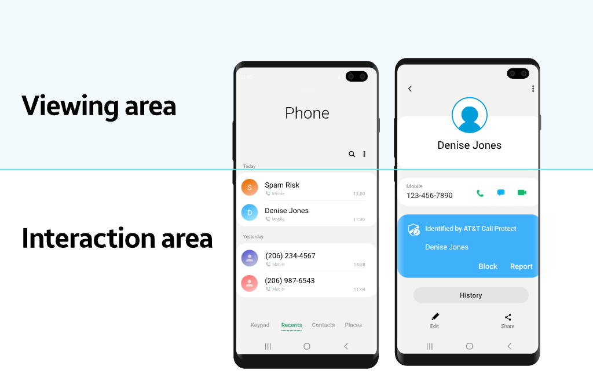

Overview
Samsung introduced a new interface design called One UI in November 2018 with the Android 9 Pie update.
Designed to improve Samsung's Galaxy user experience, One UI was developed for devices with large displays, enabling convenient and smarter interaction making one-handed usage easier than ever before.
The aim of this project was to create a streamlined experience that follows the One UI concept for the Phone when it is configured with the carrier-specific built-in call block application: AT&T Call Protect.
Challenge
How might we seamlessly integrate the AT&T Call Protect service with the Samsung phone app to ensure a consistent and unified One UI experience?
My Role
During my tenure with Samsung Mobile, I oversaw the interaction design for the North America version of the native core communication system. The applications include Phone, Real-Time Text, and Visual Voicemails.
As the UX lead of this project, I collaborated with cross-functional stakeholders across 5 teams including Product Managers, Engineering team, international version phone designers, as well as external mobile network providers (AT&T, T-Mobile) to ensure user needs, technical specifications, and requirements are met.
Discovery
Samsung had long been criticized for cluttered UX. With the goal to enhance and simplify the product's interface, our global research team initiated multiple rounds of studies to align our design approach with the needs and desires of our users.
Through the interviews and testings, we learned the following:
- Around 49% of users use one hand to hold their phones to simultaneously perform other tasks
- Larger screens smartphones comes with many ergonomic issues such as texting thumb and repetitive stress
- Native Samsung applications have clunky UI and are cluttered with rarely used options
Context
Based on the research findings, the One UI design concept was created to improve smartphone usability for millions of users. This project was part of a larger redesign for all Samsung native applications to adapt the fresh new One UI layout and interactions.
Native core communication apps (Phone, Contacts, Messages) are very unique from other applications, since different mobile carriers have their own set of specific requirements and functionality that they required for their devices. This project concerns when the native phone app is configured with AT&T carrier-specific call block application to be seamlessly integrated into the One UI refresh.
Guiding Principles
Reducing clutter and distractions, and being mindful of the ergonomics and natural interactions are at the heart of the One UI update. We wanted to ensure the design was translated to the Phone app as well.
While designing the new layout and interactions for the application, I anchored on the three principles of One UI: Focus on the task at hand, Interact naturally, Be comfortable to view.
- Focus on the task at hand
- Interact naturally
- Be comfortable to view
Design Exploration
I started identifying the carrier specific screens, created information architecture and interactions that are consistent with the One UI concept. Together with my team and AT&T stakeholders, we discussed the updated design refresh that would ensure a unified One UI experience while also supported the device requirements of AT&T. Once we had confidence in the design after a few rounds of design reviews and usability testing, we began digitalizing the designs.
Final Product
The One UI design update provides a complete redesign that ensures users have a joyful and comfortable device experience. To align with the overarching mission, new layouts and interactions are optimized for mobile carrier specific applications to be integrated with the Samsung native phone apps.
To ensure the phone app delights users and improves their experience, the redesigns are guided by the three main One UI design principles: Focus on the task at hand, Interact naturally, Be comfortable to view.

Better Reachability
To make large screens devices easier for one-hand use and ergonomically friendly, the top part of the screen is the view area where title and caller ID appear.
The middle or bottom half of the display is the interaction area, where the users can more easily reach all the main action buttons such as blocking or reporting a phone number without having to overstretch their thumbs to the top of the screen.
Know at a Glance Before You Answer
The incoming call viewing area contains glanceable caller information so that users know instantly who is calling. For potential nuisance calls, the caller ID is labeled as "Spam Risk", which users can be alerted to.
The caller information animation rotates between the phone number and the flagged AT&T Call Protect message, which draws the user's focus on the information at hand.
To ensure the animation is a comfortable user experience without interfering with usability, the incoming caller id and caller information will be announced out loud when user enable that feature in the call or device settings pages. This accessibility feature helps visually-impaired people who rely on audio feedback and voice commands to operate their smartphones.
Grouped Content Blocks for Quick Scanning
The Call log details page content is grouped by category so it is easy for the users to contextualize and focus on the caller info and functions in visual chunks to be able to quickly navigate their phones.
The corners of all cards are rounded to be consistent with the rounded corners on the Samsung devices, which makes the hardware and the UI feel more connected, thus making the device experience more visually comfortable.
Learnings
- Always have a Plan B — I had to work under very strict technical requirements from the mobile carrier and internal stakeholders from different orgs. It is important to know holistically the product feature set and its limitations to come up with feasible, user-friendly fall back options to gain alignment with stakeholders.
- Always clarify and validate — Stakeholders will often suggest that they want something, but it is often not what they need. It is my job to remove their frustration and the underlying reason why they want it. It is important to clarify and validating their problems and help them see a better alternative before blindly agreeing to solve it the way they are suggesting.
Results
- Successful launch — The update was part of the One UI 1.0 release.
- Cost saving and effort — Vastly reduce the need for engineer maintenance costs and effort by getting mobile carrier buy-ins to have a unified approach on 3rd party call block application integration on phone app.
- Improved user experience — User research confirmed that users have found the application easier to use with the new UI refresh.